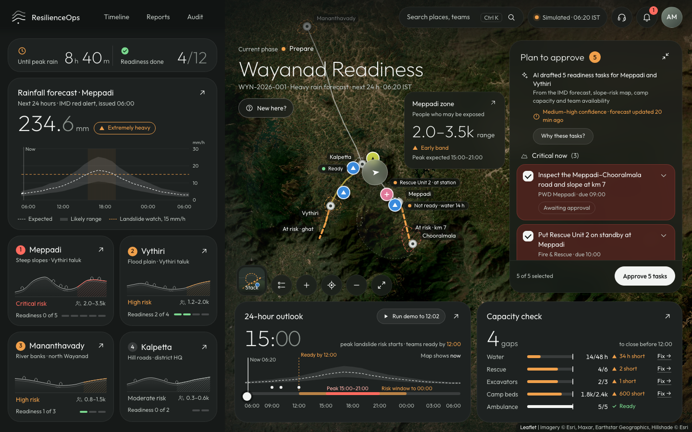
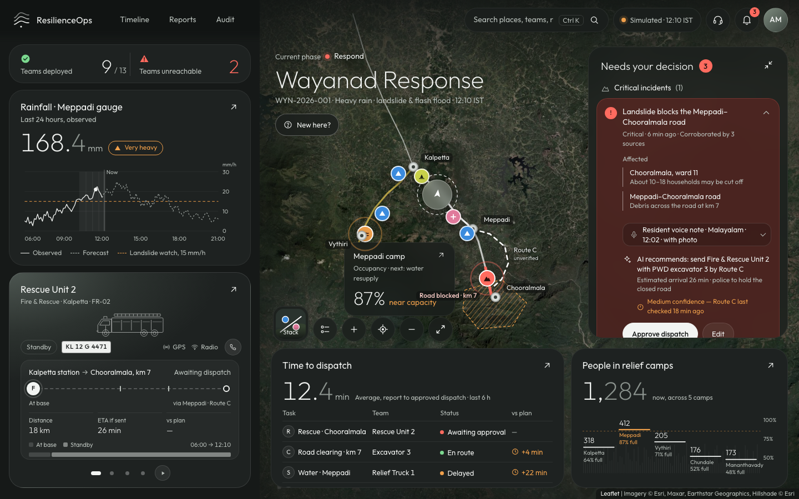
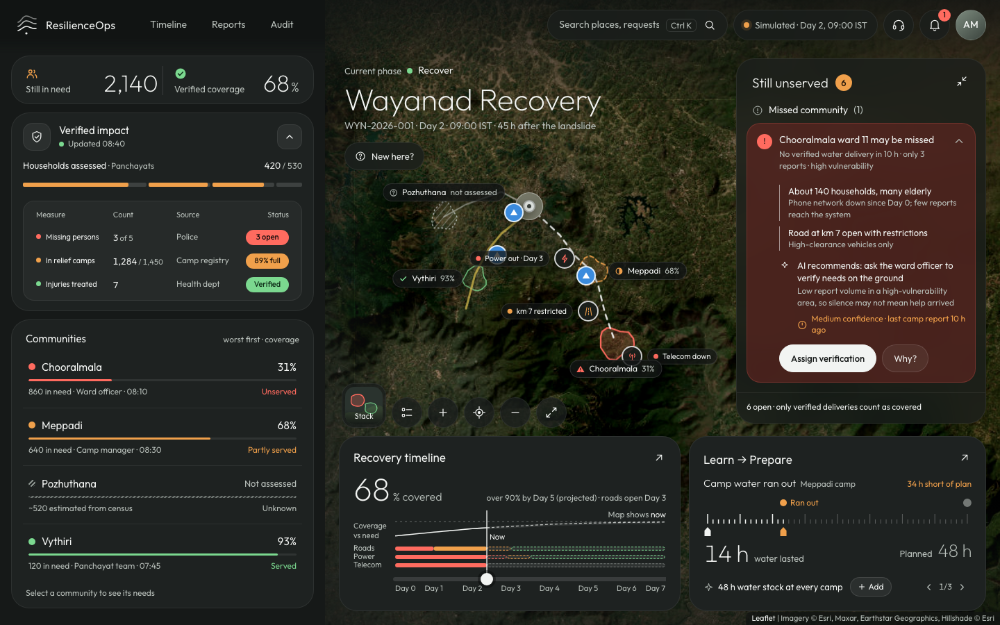

Google Cloud AI Builder Cup · Disaster management
One command view for a district disaster: AI agents that forecast, prepare, dispatch and track relief — and a person who approves every step.
Built for DDMA Wayanad, Kerala · demo event WYN-2026-001, landslide & flash flood (simulated)
The problem
An IMD red alert reaches the control room, but turning it into "who goes where by when" is manual, and the window before peak rain is a few hours.
Malayalam voice notes, ward-officer calls, police and gauges arrive separately. Confirming one incident takes calls and minutes.
A ward whose phone tower is down sends few reports, so it looks fine. Relief follows the loudest signal, not the greatest need.
Benefit to the community: faster, verified decisions before and during a disaster, relief that reaches the people who can't call, and a record the district learns from.
The solution · one event, three phases
Rank places by risk, draft readiness tasks with owners and deadlines, close capacity gaps with reviewed requests, then hand over to Respond.
Corroborate reports into one incident, recommend who to send and by which route, track every team, and hand over to Recover.
Count only verified relief, flag communities that may be missed, track restoration and turn what went wrong into next year's plan.
Plus an event timeline, situation reports for KSDMA, an audit trail of every AI recommendation, and a phone app for field teams (English / മലയാളം).
Prepare · before the storm

Respond · during the event

Recover · after

How it works · Google Cloud
| Prepare | Forecast & Impact · Risk Memory · Preparedness | Respond | Field Intelligence · Dispatch & Delegation · Forecast vs Ground Reality |
|---|---|---|---|
| Recover | Relief Coverage · Damage Assessment · Recovery & Reconciliation | All | Communications (English + Malayalam) · Command Orchestrator |
Trust · human in the loop
Dispatch, requests, advisories, reports and phase changes all need an approval. Analysts and coordinators recommend to the Incident Commander.
Each recommendation carries its sources, verified / estimated / reported tags, confidence and limitation, and lands in the Audit trail.
Figures come from tools, not the model. No casualty figures, ever. Ranges stay ranges.
If Gemini or the network is down, the app keeps its built-in text and an offline map. WCAG 2.2 AA throughout.
Feasibility and scale
Public inputs (IMD, CWC, KSDMA layers), the DEOC's own registers and phones. Runs in a browser; field teams use a phone page in their language. One Cloud Run service.
A new district is a new scenario file: places, teams, camps, routes. Agents, rules and UI stay the same. Cloud Run scales to zero between events and out during one; Firestore keeps the record.
Live IMD/CWC feeds, the fleet register, GIS road layers, WhatsApp intake for voice notes, KSDMA reporting format.
The demo event is simulated. Place names are real; events and figures are illustrative.
Thank you
Live app: [Cloud Run URL] · Code: [GitHub URL] · Demo: [video URL]